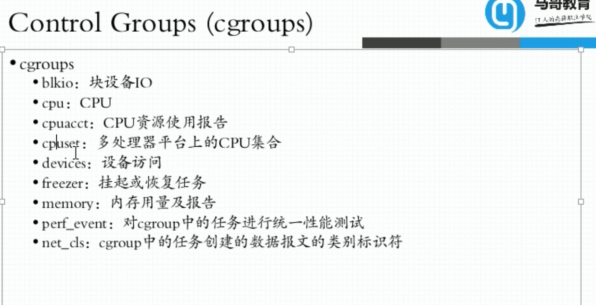
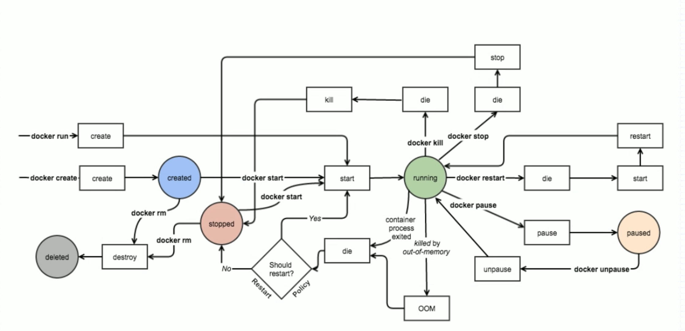
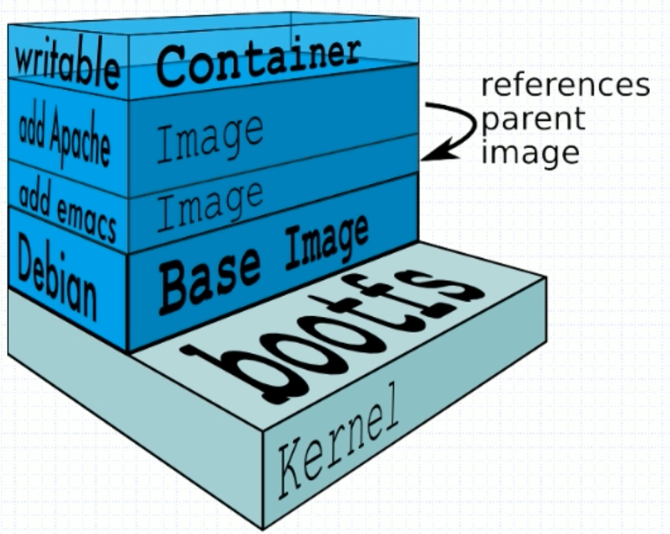

Docker 基础使用
LXC
- 主机级虚拟化
- Type-I
- Type-II
- Jail Vserver(chroot)
隔离
-
UTS,Mount,IPC，PID，User，Net
-
进程树,文件树
-
名称空间 NameSpace
-

-
clone() setns()
-
压缩型资源
-

容器核心技术
- NameSpace
- Chroot
- Cgroup
方案
- Control Groups， CGroups
- LinuxX Container
- lxc-create template
Docker
-
利用lxc作为容器引擎
-
分层构建，联合挂载
-

-
nmp 容器编排工具
-
machine+swarm+composer
-
mesos+marathon统一资源调度和分配
-
kubernetes->k8s
-
Moby CNCF
-

-
libcontainer-->runc
-
OCI
docker架构

- unix sock套接字
- container-->image
Docker对象
- images
- containers
- network
- volumes
- plugins
安装和使用
- 配置文件
- /etc/docker/daemon.json
- docker info
- overplay2
- alpine 构建容器小镜像的工具
- busybox 基本工具应用
docker run命令
- -i 交互式访问
- -t 终端
- -d 自动运行在后台
- 不能让容器中程序运行在后台
- --exec 绕过容器看内部运行机制
- docker run --name kvstore -d redis:4-alpine
- docker run --name t1 -it shawliu/web
- docker ps -a
- docker exec -it image_id /bin/sh
- 
Docker镜像管理

- Docker镜像原理

- 
- aufs-->layerfs
- 存储位置

Registry
- Repository
- Index
- 云原生
- quay
镜像制作

- docker build
- dockerfile
- docker hub automated builds
- docker commit -p b1